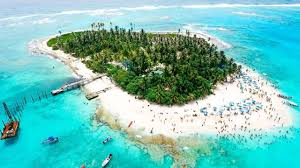
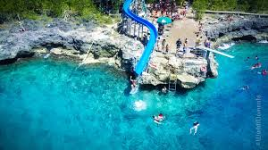
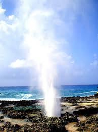

San Andrés is a tropical paradise in the Caribbean, known for its crystal-clear waters, vibrant coral reefs, and white sandy beaches. This Colombian island offers a perfect escape with its laid-back atmosphere and natural beauty.
From snorkeling in the stunning Sea of Seven Colors to exploring Johnny Cay, San Andrés captivates visitors with its charm and diversity. Indulge in fresh seafood, enjoy water sports, or simply relax by the ocean.
This island boasts many amazing spots such as:
Johnny Cay
A small coral islet just off the coast, known for its pristine beaches, swaying palm trees, and crystal-clear waters. A must-visit for sunbathing and relaxation.

West View
A popular snorkeling spot with an underwater wonderland of marine life and vibrant coral reefs. Perfect for adventurous travelers.

Hoyo Soplador
A natural phenomenon where ocean waves force air through a hole in the rocks, creating a unique and refreshing experience.
